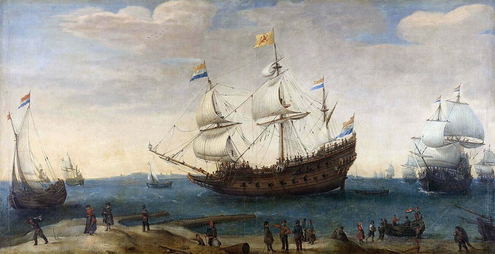

Veja
Navegações francesas
Introdução
A expansão marítima francesa foi um período de exploração e colonização realizado pelos franceses nos séculos XVI e XVII. Embora não tenha sido tão extensa ou duradoura quanto a expansão marítima de outras potências europeias, como Portugal, Espanha e Inglaterra, a França teve sua participação nesse movimento.
Impulso
A exploração marítima francesa foi impulsionada principalmente pelo comércio e pela busca por novas rotas para as Índias Orientais e para as Américas. Os franceses estabeleceram colônias em várias partes do mundo, incluindo o Canadá, partes da África, das Índias Ocidentais e do Oceano Índico.
No Canadá, a França estabeleceu uma presença significativa com a colonização da região do rio São Lourenço. Jacques Cartier liderou as primeiras expedições francesas ao Canadá no século XVI, estabelecendo as bases para a colonização francesa na região. Samuel de Champlain fundou a cidade de Quebec em 1608, que se tornou o centro da presença francesa na América do Norte.
Colônias na África
Na África, os franceses estabeleceram colônias em locais como Senegal, Ilhas Maurício e Madagascar. Essas colônias serviam principalmente como pontos de apoio para o comércio de escravos, especiarias e outros produtos tropicais.
No Oceano Índico, os franceses estabeleceram colônias nas ilhas Reunião e Maurício, bem como em partes da Índia, como Pondicherry. Essas colônias foram importantes para o comércio de especiarias e para a competição com outras potências coloniais na região.
No entanto, a França enfrentou vários desafios em sua expansão marítima. A falta de recursos financeiros e o apoio governamental limitaram a capacidade da França de competir com outras potências marítimas. Além disso, a rivalidade com a Inglaterra e outros países europeus também dificultou o sucesso da França na expansão marítima.
Apesar dessas limitações, a expansão marítima francesa deixou um legado duradouro em algumas partes do mundo. A presença francesa no Canadá, por exemplo, contribuiu para a formação da identidade cultural do país. As colônias francesas no Oceano Índico também tiveram um impacto significativo na cultura e na economia dessas regiões.
Conclusão
Em resumo, embora a expansão marítima francesa não tenha sido tão ampla ou duradoura quanto a de outras potências europeias, os franceses tiveram sua participação nesse movimento, estabelecendo colônias em várias partes do mundo e deixando um legado cultural e histórico em algumas regiões.
{kind=link}